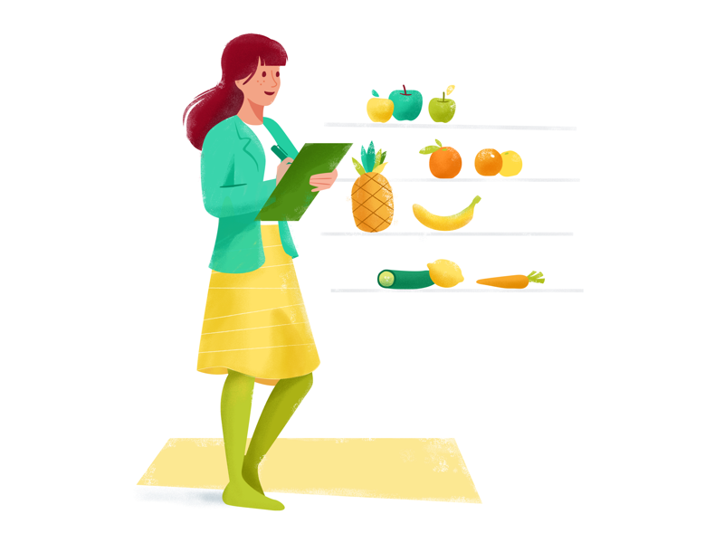
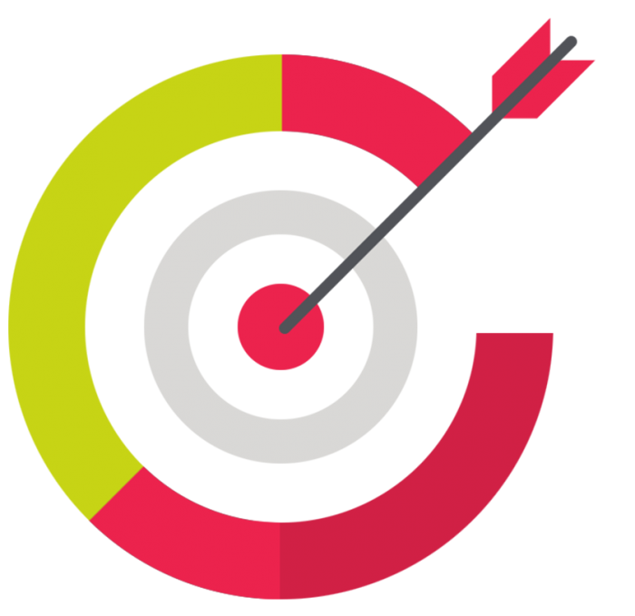
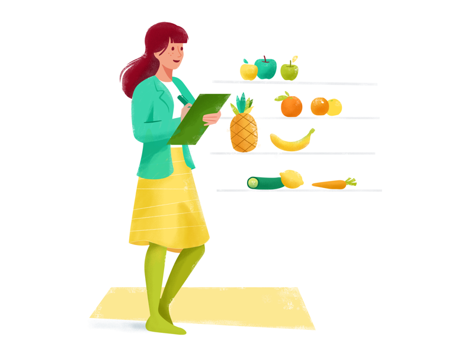
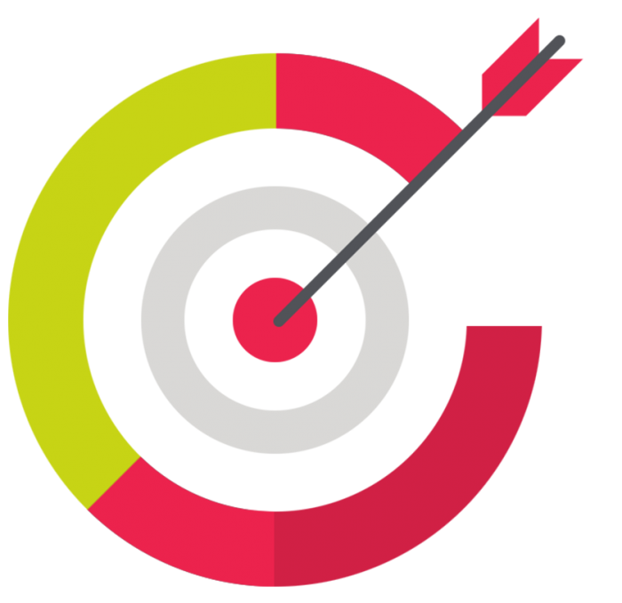

Fundado em agosto de 2019, nosso site e o programa desktop visa o melhor acompanhamento da saúde alimentar e física de nossos usuários pelos seus nutricionistas.
Oferecendo informações adicionais e personalizadas aos nossos usuários e nutricionistas, garantimos que o atendimento e acompanhamento seja melhor o possível.
Nosso sistema oferece gráficos, metas, pontuação, e um melhor e prático relacionamento entre o médico e o paciente. Assim, é mais prático e mais eficiente controlar a sua evolução e cuidar da sua saúde.
 



Se você for um usuário que deseja utilizar as ferramentas do site, com acompanhamento profissional, clique em Cadastrar para iniciar seu cadastro.
Se você for um NUTRICIONISTA que deseja utilizar as ferramentas do site para auxiliar e monitorar seus pacientes, clique em Cadastrar , e em seguida na aba CADASTRO NUTRICIONISTA. Feito isso, baixe o nosso programa desktop clickando em Download .